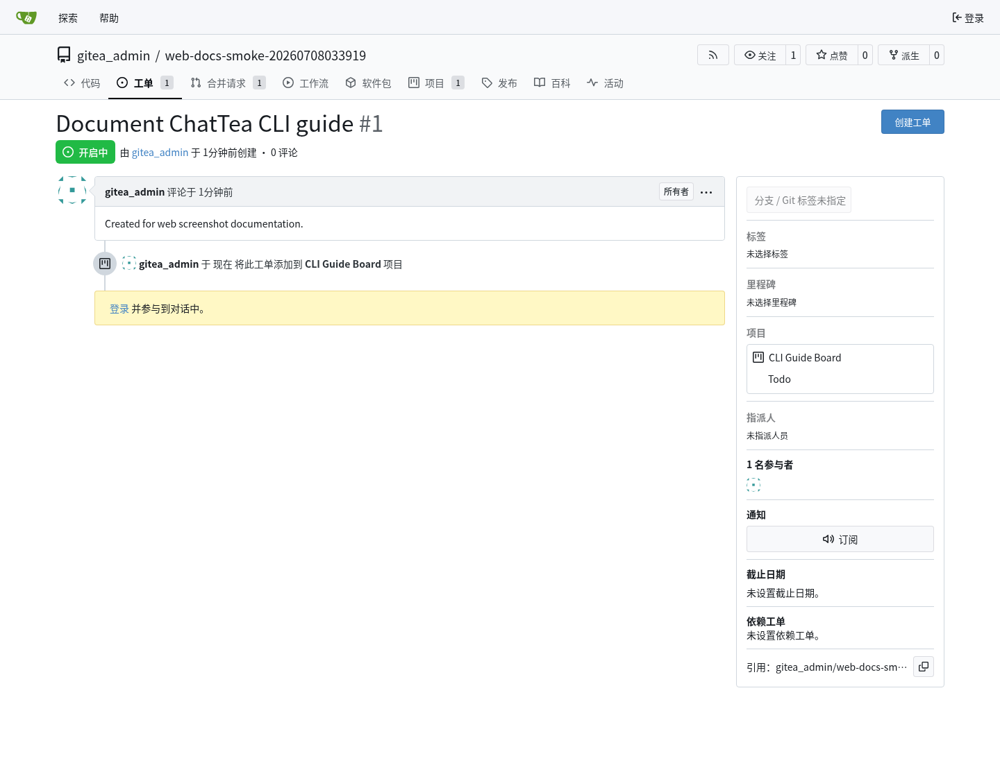
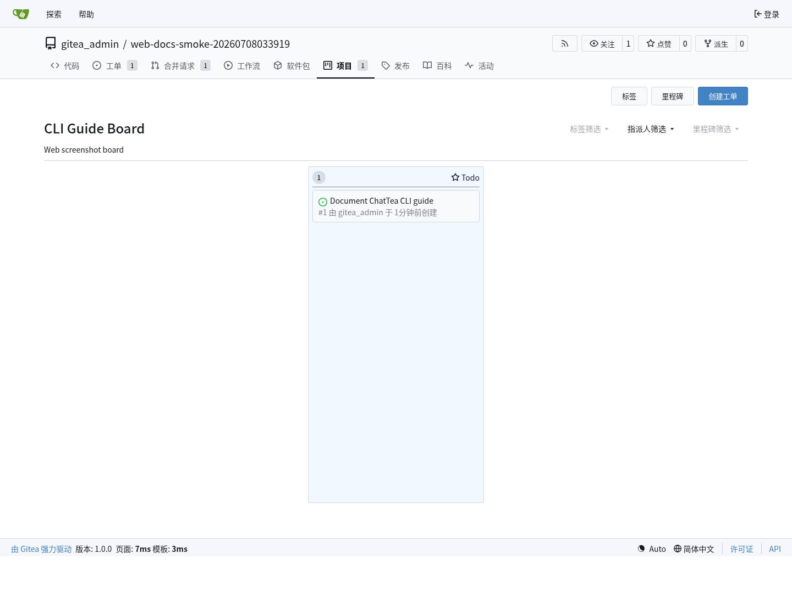
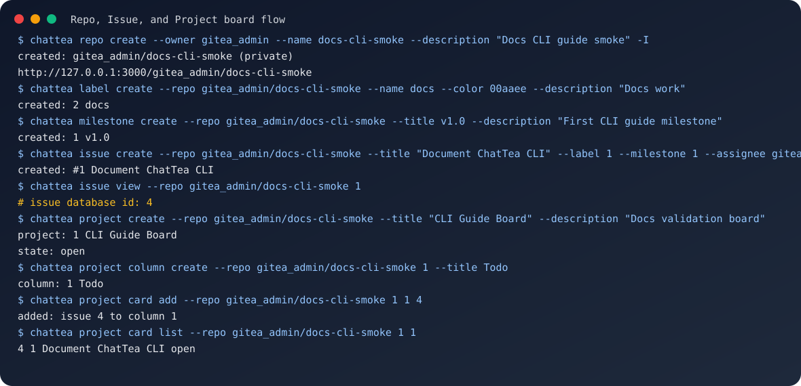
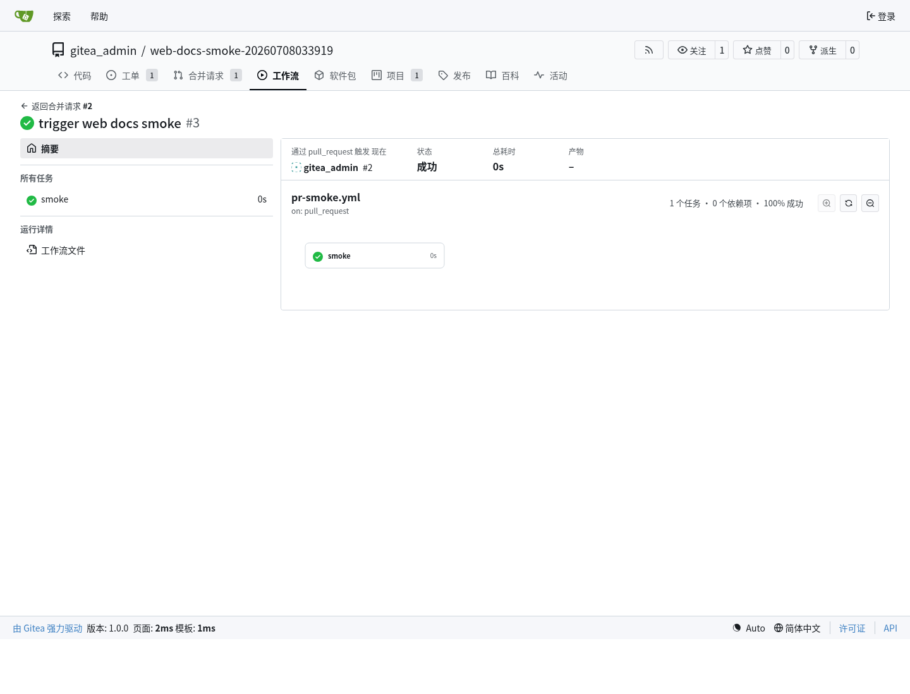
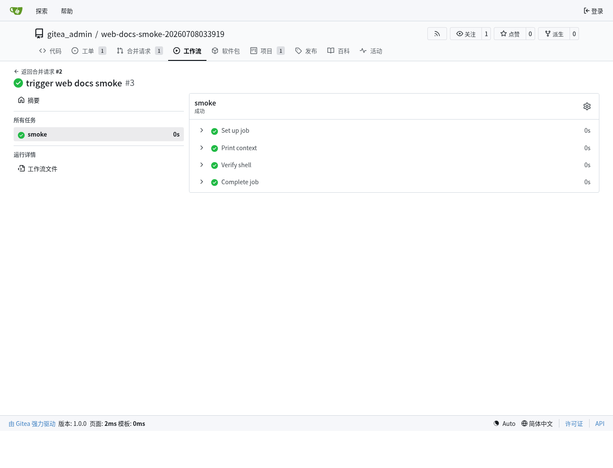
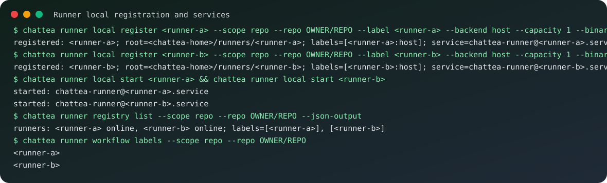
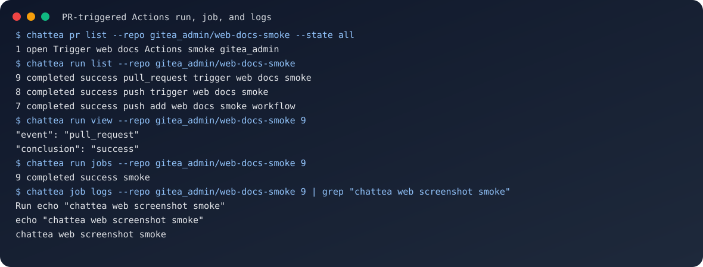

ChatTea CLI 指南
这篇指南是当前 ChatTea Gitea 能力面的实用 CLI 地图。它覆盖已实现命令树、每个主要命令组背后的 REST API 或本地 辅助函数，以及来自本地 ChatTea 管理的 Gitea 服务的实践示例。
当前 CLI 树
chattea
├── set-token # ChatTea/Git token bootstrap helper
├── server # 本地 ChatArch Gitea 生命周期
│ ├── backup # gitea dump 备份 / DB-only SQL 导出
│ ├── config # app.ini path/show/get/set helper
│ ├── install # 安装 Gitea binary，可选准备 MySQL 后端 infra
│ ├── init # 初始化 app.ini/work path，可选择 sqlite3/mysql，可跳过 migrate
│ ├── bootstrap # install + init + admin + token，可选择 sqlite3/mysql
│ ├── serve # 前台 web 进程
│ ├── start/stop/restart # user systemd service 生命周期，可指定 service name
│ ├── migrate mysql # SQLite -> ChatData MySQL backend 迁移
│ ├── status/logs # user systemd 检查
│ ├── version # 本地 Gitea binary version
│ └── health # REST: GET /api/v1/version
├── repo # 仓库 REST API + git clone helper
│ ├── list/view/create/edit/generate
│ ├── clone # 本地 git helper
│ └── migrate
├── issue # REST: /repos/{owner}/{repo}/issues
│ ├── list/view/create/edit/close/reopen/delete
│ ├── comment list/create/edit/delete
│ ├── label add/remove
│ └── assign add/remove
├── label # REST: /repos/{owner}/{repo}/labels
│ └── list/view/create/edit/delete
├── milestone # REST: /repos/{owner}/{repo}/milestones
│ └── list/view/create/edit/close/delete
├── pr # REST: /repos/{owner}/{repo}/pulls
│ ├── list/view/create/edit/close/reopen/merge
│ ├── diff/patch/commits/files
│ ├── comment list/create
│ └── review list/create/submit
├── release # REST: /repos/{owner}/{repo}/releases
│ ├── list/view/latest/by-tag/create/edit/delete
│ └── asset list/delete
├── project # Gitea repo-scoped 项目看板
│ ├── list/view/create/edit/delete
│ ├── column list/create/edit/delete
│ ├── card list/add/remove/move
│ └── issue list/add/remove/move # card 的兼容别名
├── runner # Gitea Actions runner registry + local instances
│ ├── registry token/list/view/enable/disable/delete
│ ├── local install/create/register/list/view/start/stop/restart/status/logs/doctor/remove
│ ├── local config show/set-labels/set-capacity/set-workdir/set-backend
│ ├── pool create/start/stop/status/remove
│ └── workflow labels/example/check
├── run # REST: /repos/{owner}/{repo}/actions/runs
│ └── list/view/jobs/logs/rerun/rerun-failed/delete
├── job # REST: /repos/{owner}/{repo}/actions/jobs
│ └── view/logs/rerun
├── artifact # REST: /repos/{owner}/{repo}/actions/artifacts
│ └── list/view/download/delete
├── auth # auth/login/status/token 便利入口
├── token # Gitea access token create/list/delete/bootstrap
├── bot # 本机 Gitea bot / 服务账号 local backend
│ ├── plan/create/delete
│ └── token create
└── api # 原始 Gitea API passthrough
实现合约
ChatTea 命令应是薄 Click 包装层。每个实质命令都调用一个可导入 Python 函数或 GiteaClient method。
示例：
from chattea.api import GiteaClient
from chattea.commands.repo import create_repository
from chattea.commands.issue import create_issue
from chattea.commands.project import add_card
from chattea.commands.runner import register_local_runner
from chattea.commands.run import list_runs
from chattea.commands.job import job_logs
client = GiteaClient()
repo = create_repository(name="demo", owner="gitea_admin")
template_repo = create_repository(name="template", owner="gitea_admin", template=True)
issue = create_issue("gitea_admin/demo", title="Document CLI")
add_card("gitea_admin/demo", project_id=1, column_id=1, issue_id=issue["id"])
register_local_runner("demo", scope="repo", repo="gitea_admin/demo", labels="chattea-runner-demo")
runs = list_runs("gitea_admin/demo")
logs = job_logs("gitea_admin/demo", job_id=6)
服务和令牌流程
本地开发服务从 ChatEnv 和 Gitea server lifecycle 命令开始：
# 默认 SQLite：
chattea server bootstrap -I
# 新装直接使用 ChatData-managed MySQL：
chattea server bootstrap --database-backend mysql --admin-password-env GITEA_ADMIN_PASSWORD --start-service -I
chattea server health
chattea token bootstrap --username gitea_admin --password-env GITEA_ADMIN_PASSWORD --scope all
需要 Actions 时，先在 Gitea app.ini 中启用，然后重启托管服务：
chattea server config set --section actions --key ENABLED --value true -I
chattea server restart
chattea server health
server config set 修改的是 app.ini；这是运行时配置，通常需要 restart 才可靠生效。相比之下，问题/PR/project/run/job/运行器 的 REST API 命令操作的是 live Gitea state，不需要重启 Gitea。
Token 边界要分清楚：ChatTea 这个 Python 源码仓库的 remote 是 GitHub，push 和 PR 使用 chatgh / GitHub token；临时实践仓库的 remote 是自建 Gitea，仓库 API 和 git push 使用 chattea / Gitea token。chattea set-token 只应在 Gitea 仓库目录里写 repo-local git extraHeader，或者通过 --repo OWNER/NAME 明确指定 Gitea 仓库；不应把 Gitea token 写进 GitHub 源码仓库的 local git config。
仓库、问题和项目看板示例
下面流程在本地 ChatTea 管理的 Gitea 服务上运行：创建 仓库，添加 问题 元数据，创建 仓库级 项目看板，然后把 问题 添加为 项目卡片。模板仓库可以通过 chattea repo create --template 创建，通过 chattea repo edit OWNER/NAME --template/--no-template 切换，并通过 chattea repo generate --template OWNER/TEMPLATE --owner OWNER --name NAME --copy-git-content 生成新仓库；Gitea 要求生成时至少选择一个 --copy-* 项。
Gitea Web 问题 页面：

Gitea Web 项目看板 页面：

同一流程的 CLI 记录：

重要细节：project card add 映射到 Gitea 项目卡片 API，期望的是 问题 数据库 id，不是页面上显示的 问题编号 #1。可以运行 chattea issue view --repo OWNER/REPO 1，读取返回里的 id 字段。
核心 路由 映射：
chattea issue create -> POST /repos/{owner}/{repo}/issues
chattea issue view -> GET /repos/{owner}/{repo}/issues/{index}
chattea project create -> POST /repos/{owner}/{repo}/projects
chattea project column -> /repos/{owner}/{repo}/projects/{project_id}/columns
chattea project card add -> POST /repos/{owner}/{repo}/projects/{project_id}/columns/{column_id}/issues/{issue_id}
合并请求示例
PR 是一个仓库 REST API 操作。下面截图是 chattea pr create 创建出的 Gitea Web 合并请求 页面。

CLI 命令：
chattea pr create \
--repo gitea_admin/demo \
--title "Trigger Actions practice" \
--head feature/practice \
--base main \
--body "Created by ChatTea practice"
chattea pr list --repo gitea_admin/demo --state all
chattea pr view --repo gitea_admin/demo 1
chattea pr diff --repo gitea_admin/demo 1
chattea pr files --repo gitea_admin/demo 1
路由 映射：
chattea pr create -> POST /repos/{owner}/{repo}/pulls
chattea pr list/view -> GET /repos/{owner}/{repo}/pulls
chattea pr diff/patch -> GET /repos/{owner}/{repo}/pulls/{index}.diff/.patch
chattea pr merge -> POST /repos/{owner}/{repo}/pulls/{index}/merge
实践注意：推送新分支后立刻创建 PR，可能和 Gitea 分支可见性刷新产生竞态。如果刚 push 后 Gitea 返回 404，短暂等待后用同一个 head=feature/practice payload 重试即可。
运行器和 Actions 流程
运行器支持分两层：
- Gitea registry 层：
- 注册令牌；
- 运行器 list/view/enable/disable/delete；
- repo/user/org/admin scope。
- 本机 local 层：
- 安装或复制
gitea-runner； - 为每个 runner name 写独立 root/config/workdir；
- 用 Gitea 注册令牌注册 runner；
- 管理
chattea-runner@<runner-name>.service。
第一版实现默认使用 host 运行器标签：
<runner-label>:host
workflow 中使用冒号前的 label：
runs-on: <runner-label>
真实实践已经验证：repo-scope 两个 host runner 可以在同一台机器、同一 Unix 用户下并发处理同一个 PR workflow 的两个 job；user-scope、org-scope、admin-scope runner 也分别被对应仓库 workflow 调用成功。更完整的配置、运行目录、scope 和并发结论见 Actions / Flow（动作 / 流程）快速开始。
下面的 Actions run 和 job 页面展示工作流被注册运行器接收并成功完成。


运行器 local 注册和维护的 CLI 记录：

路由 和 辅助函数 映射：
chattea runner registry token -> POST /repos/{owner}/{repo}/actions/runners/registration-token
chattea runner registry list -> GET /repos/{owner}/{repo}/actions/runners
chattea runner registry enable -> PATCH /repos/{owner}/{repo}/actions/runners/{runner_id}
chattea runner registry disable -> PATCH /repos/{owner}/{repo}/actions/runners/{runner_id}
chattea runner registry delete -> DELETE /repos/{owner}/{repo}/actions/runners/{runner_id}
chattea runner local * -> local helper around <chattea-home>/runners/<runner-name> and user systemd
runner registry enable/disable 使用 Gitea 的 disabled 字段。
运行、任务和日志示例
PR 触发 工作流 后，主要操作面是 run 和 job。运行器 章节展示了 Gitea run/job 页面；下面的 CLI 记录 展示同一状态如何通过 ChatTea 命令查看。

路由 映射：
chattea run list -> GET /repos/{owner}/{repo}/actions/runs
chattea run view -> GET /repos/{owner}/{repo}/actions/runs/{run}
chattea run jobs -> GET /repos/{owner}/{repo}/actions/runs/{run}/jobs
chattea run logs -> 聚合 run jobs 和 job logs 的 helper
chattea run rerun -> POST /repos/{owner}/{repo}/actions/runs/{run}/rerun
chattea run rerun-failed -> POST /repos/{owner}/{repo}/actions/runs/{run}/rerun-failed-jobs
chattea job view -> GET /repos/{owner}/{repo}/actions/jobs/{job_id}
chattea job logs -> GET /repos/{owner}/{repo}/actions/jobs/{job_id}/logs
chattea job rerun -> POST /repos/{owner}/{repo}/actions/runs/{run}/jobs/{job_id}/rerun
已验证的本地实践结果：
repository: gitea_admin/<actions-practice-repo>
runner: <chattea-runner-name>
pull_request run: 9
job: 9
result: success
log marker: workflow output marker appears in job logs
产物命令
工作流 上传 产物 后，可以通过 CLI 包装的 仓库 Actions 产物 API 查看、下载和删除：
chattea artifact list --repo gitea_admin/demo
chattea artifact list --repo gitea_admin/demo --run-id 6
chattea artifact view --repo gitea_admin/demo 10
chattea artifact download --repo gitea_admin/demo 10 --output artifact.zip
chattea artifact delete --repo gitea_admin/demo 10
路由 映射：
chattea artifact list -> GET /repos/{owner}/{repo}/actions/artifacts
chattea artifact view -> GET /repos/{owner}/{repo}/actions/artifacts/{artifact_id}
chattea artifact download -> GET /repos/{owner}/{repo}/actions/artifacts/{artifact_id}/zip
chattea artifact delete -> DELETE /repos/{owner}/{repo}/actions/artifacts/{artifact_id}
当前刻意不做一等封装的部分
下面这些仍可通过 chattea api 访问，但不属于第一版 打磨后的 CLI 能力面：
chattea workflow list/view/dispatch/enable/disable
chattea secret list/set/delete
chattea variable list/view/create/edit/delete
工作流 定义文件仍放在 git 中，例如 .gitea/workflows/*.yml。第一版端到端流程里，推送 工作流 文件，再配合 运行器/run/job/log 命令，是最直接的验证信号。